Experimental Setup
Factors
| Factor | Low | High | Unit |
|---|---|---|---|
sample_rate_hz | 1 | 100 | Hz |
adc_resolution_bits | 8 | 16 | bits |
averaging_window | 1 | 32 | samples |
sleep_mode_depth | 1 | 4 | level |
wakeup_interval_sec | 1 | 60 | sec |
Fixed: mcu = esp32, sensor = bme280
Responses
| Response | Direction | Unit |
|---|---|---|
measurement_accuracy_pct | ↑ maximize | % |
power_consumption_mw | ↓ minimize | mW |
Configuration
Experimental Matrix
The Fractional Factorial Design produces 8 runs. Each row is one experiment with specific factor settings.
| Run | sample_rate_hz | adc_resolution_bits | averaging_window | sleep_mode_depth | wakeup_interval_sec |
|---|---|---|---|---|---|
| 1 | 1 | 16 | 32 | 1 | 1 |
| 2 | 100 | 8 | 1 | 1 | 1 |
| 3 | 100 | 16 | 1 | 4 | 1 |
| 4 | 100 | 16 | 32 | 4 | 60 |
| 5 | 1 | 16 | 1 | 1 | 60 |
| 6 | 100 | 8 | 32 | 1 | 60 |
| 7 | 1 | 8 | 1 | 4 | 60 |
| 8 | 1 | 8 | 32 | 4 | 1 |
Step-by-Step Workflow
Preview the design
Generate the runner script
Execute the experiments
Analyze results
Get optimization recommendations
Generate the HTML report
Features Exercised
| Feature | Value |
|---|---|
| Design type | fractional_factorial |
| Factor types | continuous (all 5) |
| Arg style | double-dash |
| Responses | 2 (measurement_accuracy_pct ↑, power_consumption_mw ↓) |
| Total runs | 8 |
Analysis Results
Generated from actual experiment runs using the DOE Helper Tool.
Response: measurement_accuracy_pct
Top factors: wakeup_interval_sec (29.7%), adc_resolution_bits (29.4%), averaging_window (19.6%).
Pareto Chart
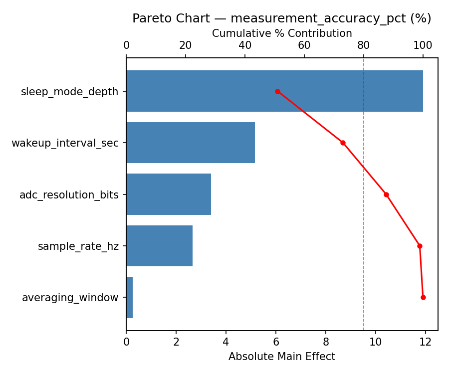
Main Effects Plot
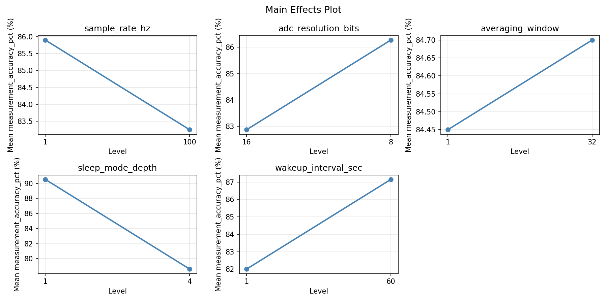
Response: power_consumption_mw
Top factors: wakeup_interval_sec (42.9%), averaging_window (18.7%), sample_rate_hz (16.8%).
Pareto Chart

Main Effects Plot
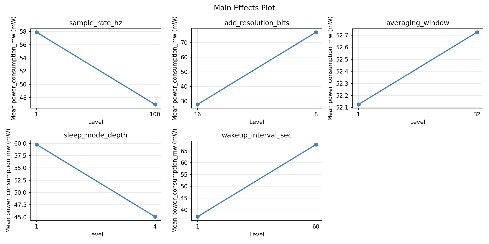
Response Surface Plots
3D surfaces fitted with quadratic RSM. Red dots are observed data points.
measurement accuracy pct adc resolution bits vs averaging window

measurement accuracy pct adc resolution bits vs sleep mode depth

measurement accuracy pct adc resolution bits vs wakeup interval sec
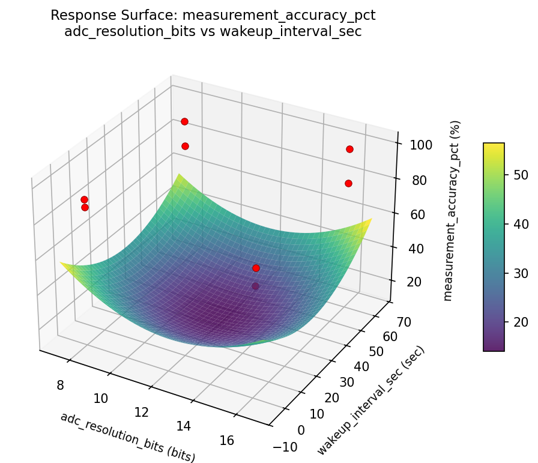
measurement accuracy pct averaging window vs sleep mode depth

measurement accuracy pct averaging window vs wakeup interval sec

measurement accuracy pct sample rate hz vs adc resolution bits
measurement accuracy pct sample rate hz vs averaging window
measurement accuracy pct sample rate hz vs sleep mode depth

measurement accuracy pct sample rate hz vs wakeup interval sec

measurement accuracy pct sleep mode depth vs wakeup interval sec
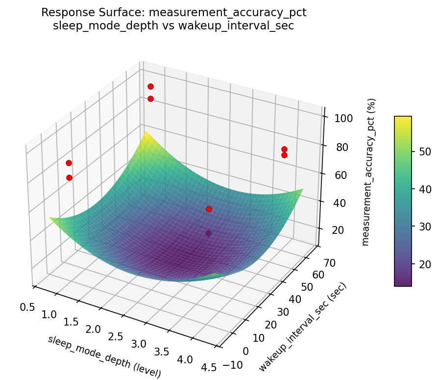
power consumption mw adc resolution bits vs averaging window

power consumption mw adc resolution bits vs sleep mode depth
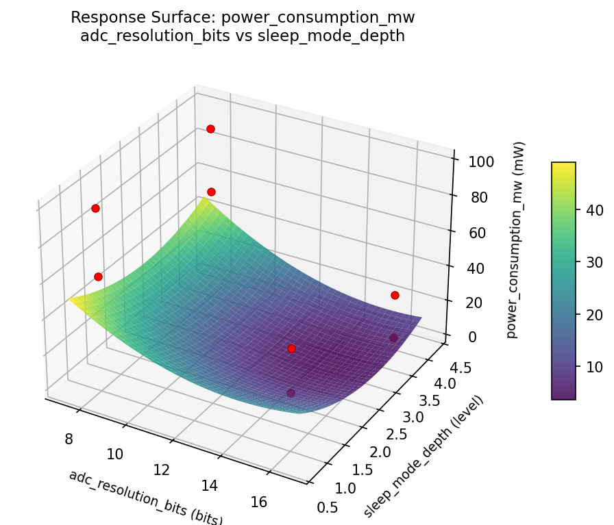
power consumption mw adc resolution bits vs wakeup interval sec

power consumption mw averaging window vs sleep mode depth

power consumption mw averaging window vs wakeup interval sec
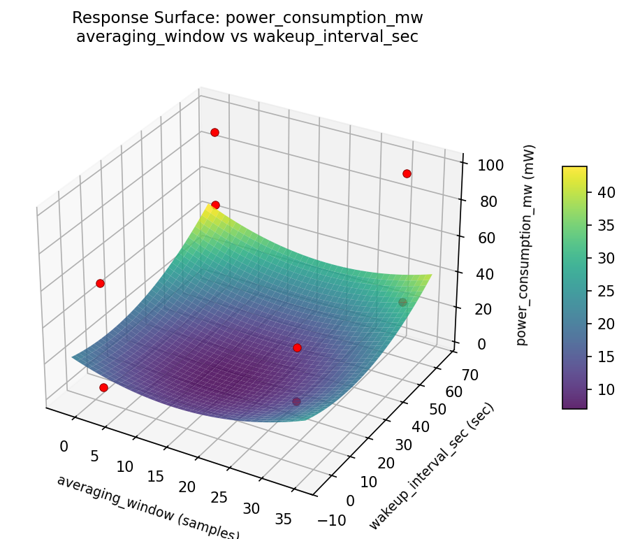
power consumption mw sample rate hz vs adc resolution bits
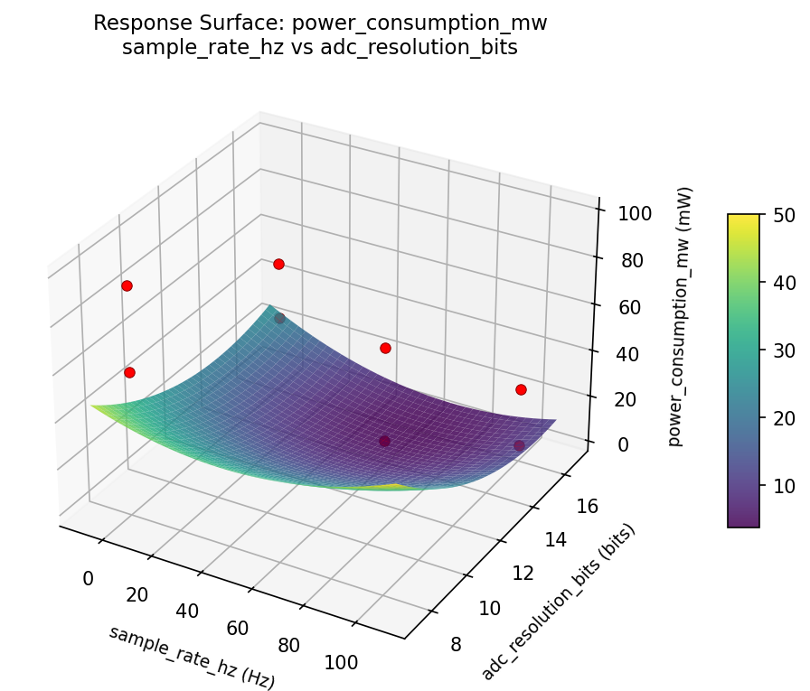
power consumption mw sample rate hz vs averaging window
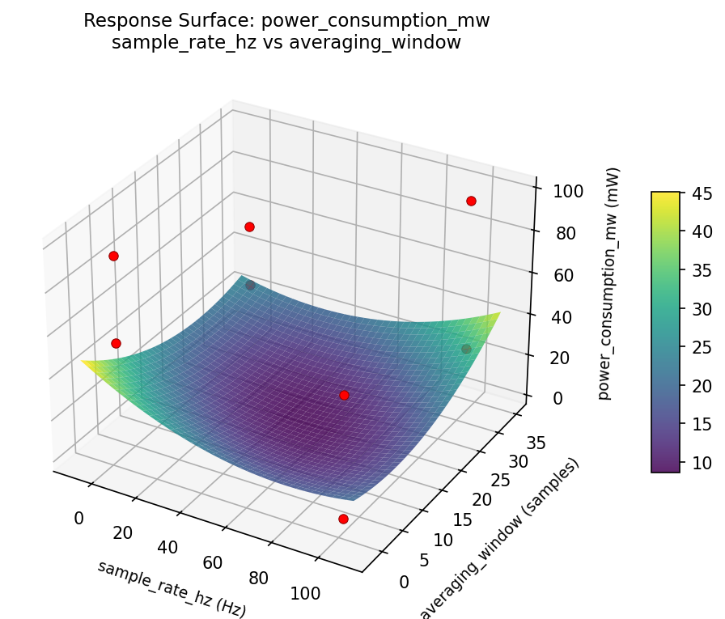
power consumption mw sample rate hz vs sleep mode depth
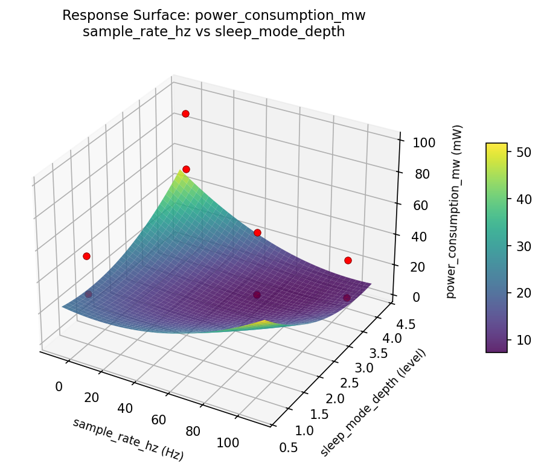
power consumption mw sample rate hz vs wakeup interval sec
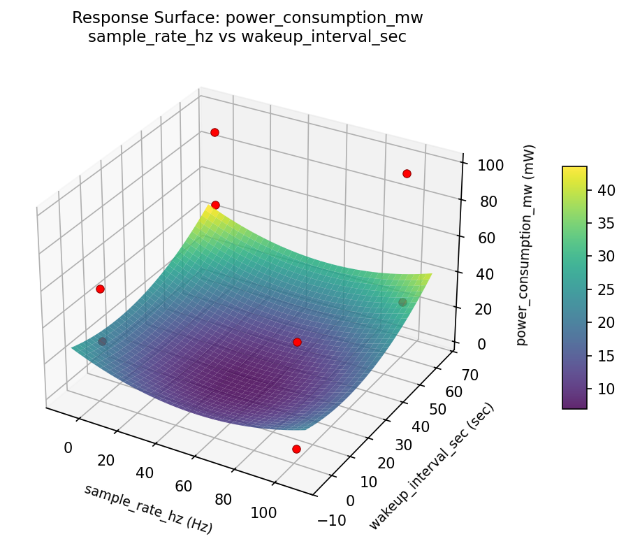
power consumption mw sleep mode depth vs wakeup interval sec